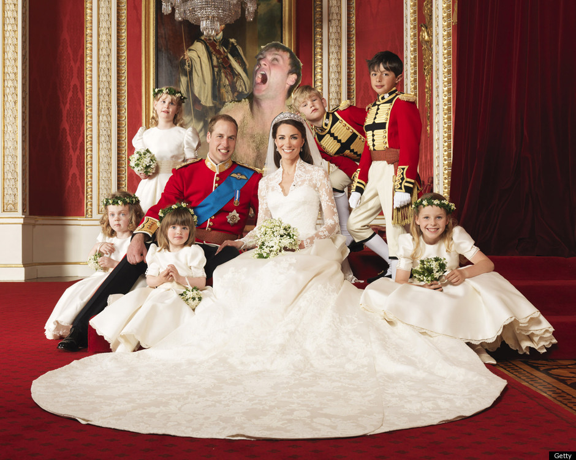
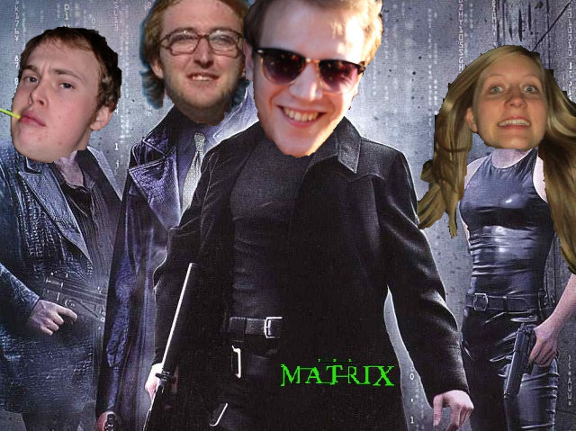

This page will give a list of photoshops that I have made. My opinion of most things is that the worse they are, the funnier they are (actually, that is hyperbole, I don't fully believe that, but anyway), so most of these may be stupid/awful. I hope you enjoy regardless.
If you are interested in any of the techniques used I will try to delineate here what I did (or more precisely, links to the tutorials I used) but feel free to contact me if you have any questions.
- Firstly, I highly recommend the GIMP documentation, which is incredibly readable, has many examples, and is pretty much all you could want from a guide.
- For blending faces in to other objects (see, for example, Lotta the cactus) I found this guide, which was very succinct and easy to follow.
- At some point I intent to use the Obama hope poster tutorial
JP as President

Mavid gate crashes the Royal wedding
The life of Mavid

Tom's been working out
Mike's enjoying this...
...whilst Cox is cool as a cucumber
Simon has also been working out
How the Matrix should have been
Chris's political allegiances come out
Cactus Lotta - which do you prefer?
`Simon the Braveheart
JCP at the last supper
JP is a knockout
The Perudo crew - the Pecrewdo
Tom loves breakfast
Cox gets back to teaching
How the cabinet should look

Mike doesn't care
What a performance
Cox the Riveter
A request
The prodigal Sun